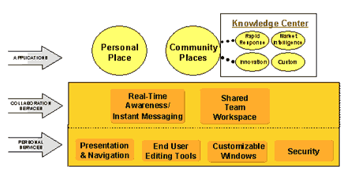

Андрей Колесов
В комплексе программного обеспечения корпорации IBM (http://www.ibm.com) технологии Lotus (http://www.lotus.com) занимают одну из ключевых позиций, покрывая огромный диапазон практических задач корпоративных пользователей в трех областях: коммуникации, управление документами и управление знаниями. Для российских пользователей они представляют особый интерес - в силу исторических причин ПО Lotus применяется у нас гораздо шире, чем другие программные решения IBM.
В настоящее время линейка технологий Lotus включают следующие продукты (точнее, семейства продуктов):
- Lotus Domino - сервер электронной почты, Web-приложений и приложений для совместной работы;
- Lotus Notes - интегрированный почтовый клиент, клиент для совместной работы, работы с документами и доступа к внешним источникам данных (Интернет, реляционные базы данных и пр.);
- Lotus LearningSpace - система для поддержки процесса дистанционного обучения;
- Lotus Sametime - мгновенный обмен сообщениями и совместное использование приложений;
- Domino Workflow - автоматизация деловых процедур;
- Domino.Doc - система управления документами;
- Lotus QuickPlace - общее рабочее пространство для сотрудников и организаций;
- Lotus Enterprise Integrator - технологии интеграции с СУБД и ERP-системами;
- Lotus Discovery Server - сервер обнаружения знаний.
В этом обзоре мы рассмотрим продукты Lotus, относящиеся к области управления документами и знаниями.
Архитектура решений Lotus
Сегодня работа организаций включает активное взаимодействие людей и подразделений внутри предприятия, а также с внешними по отношению к ним организациями. Говоря о компьютерных технологиях, которые поддерживают такое взаимодействие, можно выделить три их составляющих:
- электронная почта и системы пересылки сообщений;
- базы данных коллективного доступа;
- средства автоматизации деловых процедур (workflow).
Эти технологии как раз и составляют основу ключевых продуктов Lotus Domino и Notes, которые можно охарактеризовать как систему распределенных баз данных коллективного доступа, интегрированную с возможностями электронной почты. В целом же архитектуру решений Lotus можно схематически представить, как показано на рис. 1.
 |
| Рис. 1. Архитектура решений Lotus.
|
Lotus Domino R5
Семейство серверов Domino R5 представляет собой программную серверную платформу для разработки деловых решений. Благодаря единой архитектуре серверы Domino позволяют заказчикам развивать систему по принципу: "Начать с малого и быстро расширяться".
Domino Mail Server предоставляет средства передачи сообщений и совместной работы, включая базы данных дискуссий, интегрированный доступ к Web, функции ведения календаря и группового планирования.
Domino Application Server - полноценная платформа для Web-приложений, включающая в себя все возможности передачи сообщений Domino Mail Server. Сюда входят встроенные средства Domino Enterprise Connection Services (DECS) - графический, не связанный с программированием интерфейс для интеграции в режиме реального времени традиционных и корпоративных систем с приложениями Web.
Domino Enterprise Server предоставляет все функциональные возможности Domino Mail Server и Domino Application Server, усиленные за счет функций кластеризации Domino Clustering Services.
В первой половине 2002 года должны начаться поставки следующей версии продукта Lotus Notes/Domino с кодовым названием Rnext.
От управления документами - к управлению знаниями
Как определить различие между данными, информацией и знаниями, а также между различными формами и типами знаний? Для более наглядной демонстрации проведем аналогию между тремя названными понятиями и музыкой.
Данные - это исходный материал, служащий строительными блоками для информации и знаний. В терминах "музыкальной" аналогии данные - это просто одна нота. В терминах делового мира данные могут представлять собой число из ячейки электронной таблицы.
Информация - это данные, рассматриваемые в каком-либо контексте, из которого пользователь может составить свое собственное мнение. В музыкальной аналогии информация - это партитура. Переходя к аналогии делового мира, информацию можно сравнить с таблицей, в которую сведены финансовые данные.
Знание дает возможность предпринимать действия на основании информации. Это соответствующие юридические документы, ноу-хау и накопленный опыт, и, естественно, это часто требует коллективной работы. Используя музыкальную аналогию, знания можно сравнить с исполнением партитуры симфоническим оркестром, а в аналогии с деловым миром - это процесс принятия решения на основании таблицы данных.
По форме знания делятся на неявные и явные. Неявные знания индивидуальны и есть у каждого: привычки, шаблоны мышления и поведения, интуиция - то, что мы знаем, но не можем выразить словами. Неявные знания очень часто сложно документировать и высказать традиционным способом. Явные знания - это накопленный опыт, который можно выделить и представить в форме отчетов, анализов, руководств, указаний, практических рекомендаций к действиям или в виде определенных кодов. Кроме того, полезно выделить несколько типов знаний: знание предметной области, знание людей и знание процессов.
Электронное управление документами, потоками работ и поиском информации
Domino.Doc
Domino.Doc - основанное на стандартах Web решение в области управления документами, которое позволяет организациям распространять и совместно работать над широким спектром деловых документов в гибкой и глобально доступной среде. Domino.Doc обладает такими возможностями, как интерфейс в виде Web-страницы, информирование о том, кто еще в данный момент работает с конкретными документами, контроль версий, распределенная блокировка документов, поддержка дискуссионных форумов и интеграция с Windows Explorer.
Распределенное редактирование. В Lotus Domino.Doc используются средства репликации Lotus Domino, что позволяет работающим в различных областях командам совместно использовать документы на локальных серверах, сохраняя при этом целостность документов в масштабе всего распределенного предприятия.
Полный набор средств управления документами. Поддерживаются все основные функции управления документами, включая оформление получения/выписывание, контроль версий, полнотекстовый поиск в масштабах всего управляемого содержимого, контрольные журналы, работу с шаблонами, уведомления об изменениях и многие другие.
Управление жизненным циклом - от авторской разработки до редакции, утверждения, распространения и архивирования.
Поддержка широкого выбора клиентов. Пользователи могут совместно работать в масштабах всей сети, используя для этого браузеры Web или клиентов Notes. Для доступа и сохранения документов в Domino.Doc можно использовать команды меню File в Lotus Word Pro, Microsoft Word или любых других приложениях, совместимых с ODMA.
Domino.Doc представляет собой естественное расширение Lotus Domino и Notes - распределенной инфраструктуры для передачи сообщений, групповой работы и приложений Web. Это обеспечивает высокую масштабируемость, гибкость и низкие эксплуатационные затраты.
От концепции - к знаниям
Рассмотрим компанию по производству бытовой техники, в которой конструкторы только что представили свои идеи относительно нового продукта. В качестве первого шага по реализации этих предложений менеджер по продуктам в Бостоне создает в Domino.Doc файловый "ящик" - удобное хранилище для всех документов по проекту, защищенный доступ к которым возможен из любой точки киберпространства.
Представители отделов маркетинга, производственного отдела (находящихся в Чикаго), юридического отдела и других будут создавать новые документы и редактировать уже имеющиеся. Расположенное в Лондоне рекламное агентство также будет участвовать в работе.
Виртуальная, распределенная рабочая группа должна будет коллективно создать бизнес-план, разработать спецификации, подготовить маркетинговые материалы и многие другие типы документов. Чтобы сеть работала максимально эффективно, главный файловый "ящик" из Бостона путем репликации дублируется в Чикаго. Domino.Doc автоматически обеспечивает синхронизацию двух копий, что позволяет пользователям работать с документами из любой копии при сохранении целостности этих документов.
В коллективно используемом файловом "ящике" члены рабочей группы могут распределять документы по категориям с помощью папок, например, Test Plans ("Планы испытаний") или Trade Show Materials ("Материалы для выставки"). Удобный доступ к документам обеспечивается с помощью клиентов Notes, Web-браузеров и даже приложений для настольных ПК, в которых они были созданы. Все документы в Domino.Doc, включая контракты и конструкторские материалы, надежно защищаются от несанкционированного доступа.
Авторы присваивают новым документам заранее определенные типы, такие как Project Plan (план проекта) или Design Specifications (конструкторские спецификации). Тип документа определяет его жизненный цикл: как и когда он будет редактироваться, утверждаться, распространяться и архивироваться.
Пресс-релиз, к примеру, создается рекламным агентством. После сохранения в файловом "ящике" Domino.Doc автоматически направляет его в отдел управления продуктами для редакции и затем в юридический отдел для утверждения. Факт утверждения документа инициирует рабочий поток для преобразования документа в формат HTML и размещения его на корпоративном Web-сайте. Через 12 месяцев Domino.Doc запускает специальное приложение для архивирования документов на оптический диск. Однако Domino.Doc продолжает управлять всеми основными сведениями о документе, что позволяет в будущем найти и извлечь его.
Так, от концепции к знаниям и обратно идеи и опыт, накопленные при выпуске на рынок одного продукта, могут приносить несомненную пользу для всех будущих проектов.
Domino Workflow
Domino Workflow, с технологией управления потоками работ (workflow) для платформы Domino, существенно расширяет встроенные в Domino возможности автоматизации потоков работ. Решения на основе Domino Workflow автоматизируют потоки информации и маршрутизируют ее людям с соответствующими полномочиями и экспертизой.
Компонент Workflow Architect дает проектировщикам средства быстрой разработки и управления рабочими процессами. Workflow Engine реализует и хранит бизнес-логику процесса, информацию об организационной структуре, узлы процессов, контролирует выполнение и архивирование. Workflow Viewer позволяет участникам просматривать статус и контекст деятельности, связанной с потоками работ.
Domino Extended Search
Расширенное средство поиска позволяет осуществлять поиск как во внутренних, так и во внешних источниках (Web), с использованием различных критериев. К нему можно обратиться из единого интерфейса Lotus Notes/Domino. Можно выполнять параллельный поиск по доменам Notes, в традиционных базах данных и с помощью популярных поисковых систем Web, объединять полученные результаты в виде одного упорядоченного списка, сохранять запросы для их повторного использования, просматривать коллективно используемые запросы на поиск для выявления людей со сходными интересами.
Lotus Knowledge Discovery System
Идея Lotus Knowledge Discovery System (KDS) состоит в использовании коммуникационной инфраструктуры и инфраструктуры совместной работы Domino для создания полностью интегрированной платформы управления знаниями. Lotus Knowledge Discovery System реализует формулу управления знаниями "Люди, Места и Информация" (People, Places and Things). Здесь компонент "Люди" символизирует средства обнаружения и отслеживания экспертизы, "Места" подразумевает порталы знаний и совместной работы, а под "Информацией" имеются в виду средства каталогизации контента. KDS представляет собой набор интегрированных сервисов, которые расширяют возможности Domino за счет каталогизации контента и информации о людях, определения ценности информации, значения и связей, доставки нужной информации нужным людям в нужном месте и в нужное время.
Lotus K-Station
K-Station, составная часть Lotus Knowledge Discovery System, - это корпоративный портал знаний (рис. 2), который обеспечивает средства создания индивидуальных профилей, средства управления персональными данными и информацией, представляющей интерес для определенного сообщества, определенной задачи или работы (подробнее см. статью "Lotus K-Station", "BYTE/Россия" № 2/2001).
Портал K-Station можно персонифицировать и сконфигурировать за счет выбора различных информационных источников и "окон знаний" (например, почта, календарь, дискуссионные базы, Web-сайты, новостные каналы и т. д.). Важный его компонент - библиотека шаблонов приложений работы со знаниями, которая дает пользователям возможность быстро создавать полнофункциональное виртуальное пространство для совместной работы. Механизм обнаружения обеспечивает средства определения экспертизы и средства создания каталогов контента, которые соединяют отдельных людей и сообщества с информацией и другими людьми в соответствии с областью интереса.
|  |
| Рис. 2. Архитектура портала Lotus K-Station.
|
Организации могут использовать Domino как базовую технологию создания порталов, либо использовать K-Station как самостоятельный продукт, либо интегрировать эти средства с другими продуктами IBM/Lotus, в том числе WebSphere Portal Server, Enterprise Information Portal и Discovery Server.
Lotus Discovery Server
Lotus Discovery Server объединяет в себе все важнейшие элементы инфраструктуры управления стратегическими знаниями, включая Карту знаний (Knowledge Map, или K-map), профили экспертов и мощные инструменты поиска. Путем автоматического сопоставления тем поиска, экспертов и информационных ресурсов сервер определяет связи между документами, людьми и темами. Он позволяет автоматически отслеживать знания, накопленные организацией, и ведет учет экспертов. Ниже кратко описаны ключевые возможности сервера.
Визуальный поиск знаний. Поиск и просмотр информации и данных об экспертах с помощью простой в работе интегрированной Карты знаний. Можно одновременно просматривать информацию о документах, людях, местах, категориях и их взаимосвязях.
Поиск полных ответов. Эффективный поиск во всей интрасети и за ее пределами, включая поиск на Web-сайтах, в системах типа back-end, в приложениях Lotus Domino и многих других местах. Упорядочение результатов поиска по релевантности увеличивает ценность поиска.
Поиск экспертов. Можно выяснить, кто является экспертом в конкретной области, получая эту информацию в виде профиля интересов, навыков и достижений.
Высокий уровень автоматизации. Автоматическое создание и обновление Карты знаний и профилей экспертов упрощают работу пользователей и администраторов, а кроме того, гарантируют постоянную доступность новейших ресурсов.